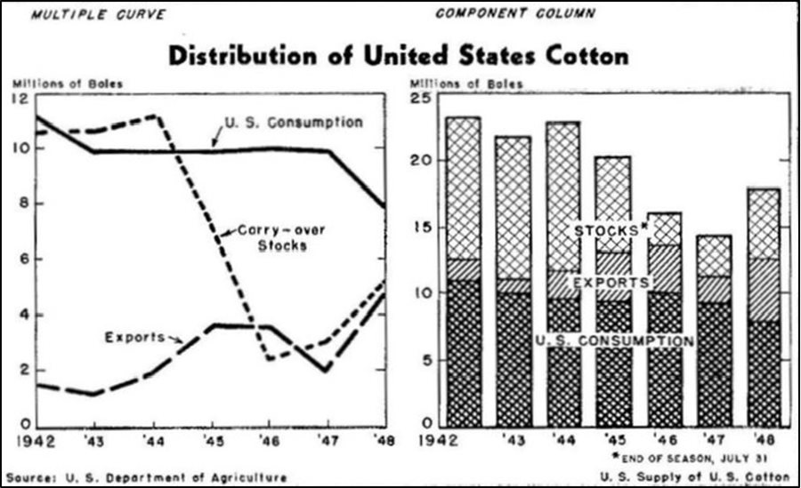
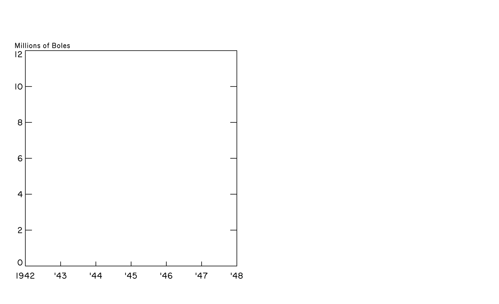
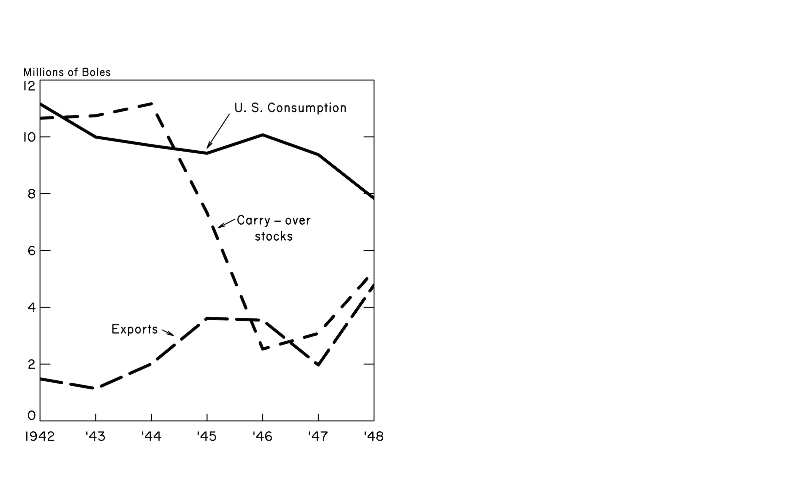
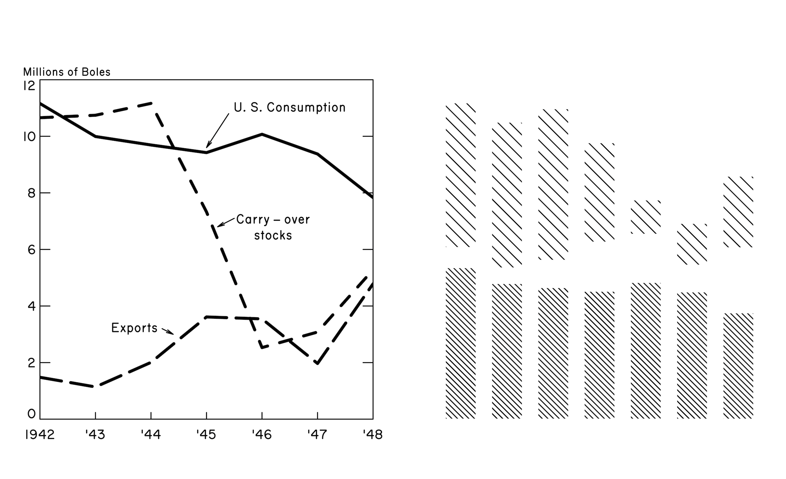
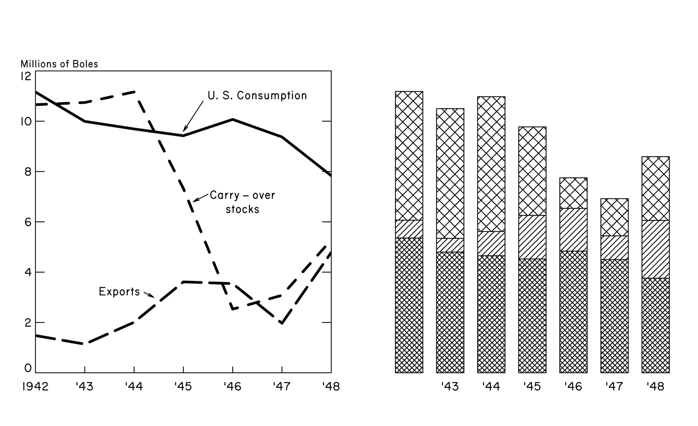
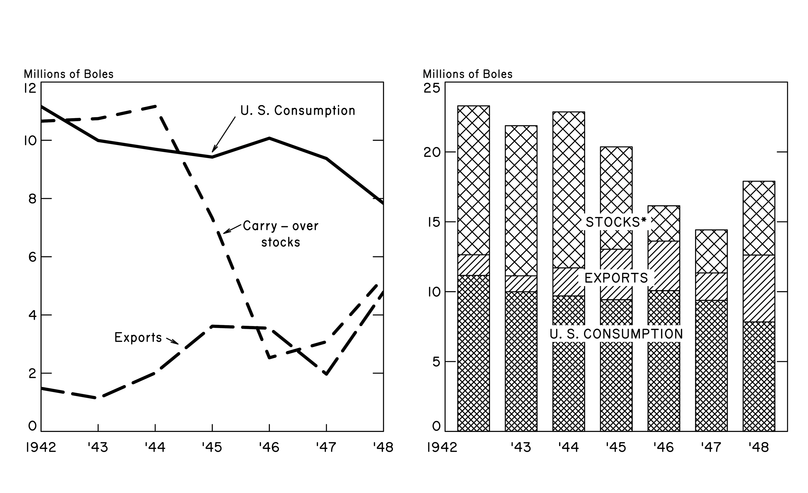
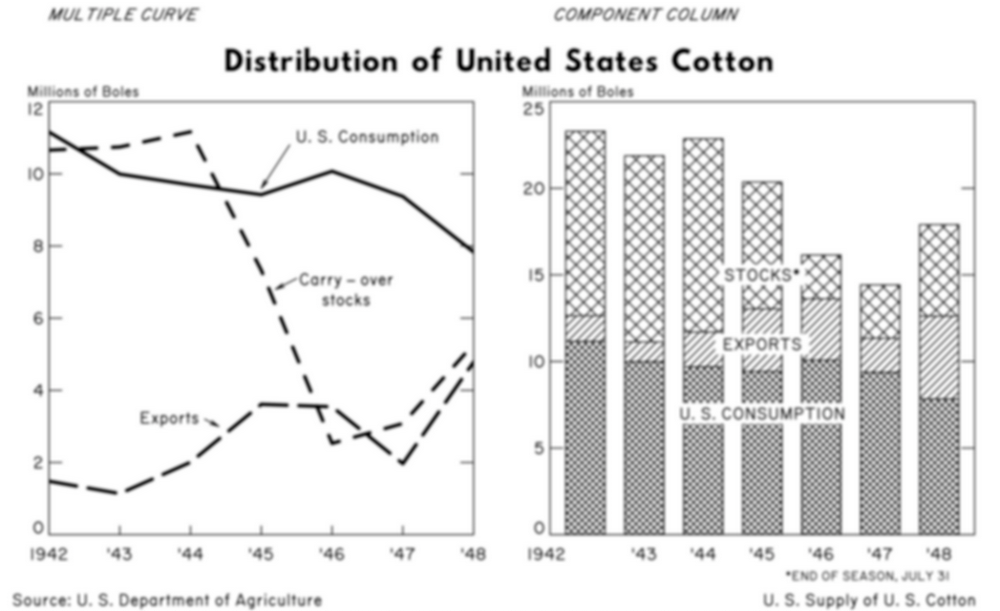

cotton <- data.frame(
Year = 1942:1948,
`US consumption` = c(11160, 9993, 9693, 9423, 10072, 9374, 7833),
Exports = c(1480, 1139, 2007, 3613, 3545, 1968, 4785),
Stocks = c(10657, 10744, 11164, 7326, 2530, 3080, 5283),
`Total supply` = c(23297, 21876, 22864, 20362, 16147, 14422, 17901),
check.names = FALSE # allows for spaces in variable names
)tl;dr
For a competition I recreated a data visulisation using base R.
Note
#CottonViz
The Young Statistician’s and History of Stats sections of the Royal Statistical Society (RSS) have challenged people to recreate1 or remix Mary Eleanor Spear’s visualisation of cotton supplies in the United States in the 1940s:2

I thought it would be interesting to recreate it using only R’s built-in base graphics. This might be a nice demo of zero-dependency plotting for R users who are more familiar with {ggplot2}.3
Long-story short, here’s what popped out at the end of my scripting:
It’s certainly not an identical match to the original, but it gets most of the way there.4
You can find the scripts for both the recreation and gif in my matt-dray/viz-recreation GitHub repo.
The rest of this post is a walkthrough of the code used to create the final output. It’s in five sections: (1) set-up, (2) line plot, (3) bar plot, (4) margin labels and (5) saving, with a closing section reflecting on tricky parts and potential improvements.
1. Set-up
Data
The dataset is available to download from the RSS website, but it’s small enough that I can just recreate it here exactly.
Fonts
I’ve used two font families that weren’t pre-installed on my system:
- Routed Gothic, a very close match for the general text of the plot
- Hussar Bold Condensed, a not-that-great match for the main title, but it’ll do
It was sufficient for me to install these fonts on my system (macOS Big Sur running R v4.0.5) and invoke them by name, as you’ll see through the rest of this walkthrough. Your mileage may vary.
Constants
I’ve set a few values as objects so they can be reused and changed more easily without having to copy-paste in the body of the script. Note that I’ve used the convention here that constants are ALL_CAPS, so they’re easier to spot in the plotting code.
Click for constants (I hid this because it’s dull)
# Constants: general
CEX <- 0.8 # font size
YDIV <- 1000 # division for y-axis
BLACK <- "black" # easy to supply off-black instead
WHITE <- "white"
XTICK_LEN <- 0.02 # x axis tick length
YTICK_LEN <- 0.03
# Constants: lineplot (LP)
LP_YLIM <- c(0, 12) # y-axis limite
LP_WIDTH <- 3 # width of lines
LP_YTICK_SEQ <- seq(2, 10, 2) # y tick locations
LP_YLAB_SEQ <- seq(0, 12, 2) # y label locations
# Constants: barplot (BP)
BP_YLIM <- c(0, 25)
BP_YTICK_SEQ <- seq(5, 20, 5)
BP_YLAB_SEQ <- seq(0, 25, 5)
BP_SPACE <- 0.5 # space between bars
BP_HATCH_ANGLE <- 45 # hatchmark angle
BP_HATCH_HI <- 25 # hatchmark density
BP_HATCH_MID <- 22
BP_HATCH_LO <- 12Start a graphics device
With base plotting you first open a new ‘device’ so that your plotting calls can be captured. You specify things here like the write path and dimensions. When you’ve finished your plotting code, you run dev.off() to close the device and save the output.
Here I’m using png() so the output is a PNG file. This function is part of the suite of in-built graphics devices from the {grDevices} package, which also includes things like the lossless tiff() format.
png(
"~/Desktop/cottonviz.png", # set to a path of your choice
width = 20,
height = 12.2,
units = "cm",
res = 1200
)You can think of this as setting up a canvas and then you’re going to layer plot objects over the top of it (perhaps not too dissimilar to {ggplot2}). Beware: things like units and placement of elements will be related to the height and width that you’ve declared here.
That means you shouldn’t necessarily rely on the graphics windows opened by R or RStudio when previewing the final output; you should rely only on a saved output.
Plotting parameters
With base R you can set various par()ameters that apply to your plot as a whole. The chart we’re recreating is one row of two plots, so we can use mfrow = c(1, 2), for example. We can also set some global things like the font family.
# Set plotting parameters
par(
mgp = c(0, 0.2, 0), # gap to tick labels
mar = c(3, 2, 4, 1), # margins
mfrow = c(1, 2), # plot layout
ann = FALSE, # annotation
cex.axis = CEX, # axis font size
family = "Routed Gothic" # font family
)I’ve selected ‘Routed Gothic’ as the font family and I think it’s a great match. It’s based on the Leroy lettering set that was often used for hand-labelling technical drawings.
2. Line plot
So, here’s the first ‘hack’. I’m going to set up a ‘fake’ scatter plot with no content and then we’re going to add our desired content to it sequentially. This provides the correct plot dimensions to which we can add bespoke details.
# Dummy x-y scatter plot
plot(
x = cotton$Year,
y = cotton$`US consumption` / YDIV,
axes = FALSE, # no axes
pch = "", # expunge axes/points
ylim = LP_YLIM, # y-axis min/max limits
xaxs = "i", # set 'absolute origin'
yaxs = "i"
)Note the use of yaxs and xaxs = "i" which ensures that the axis limits are exactly at the minimum and maximum values for the axis (e.g. it forces [0,0] to be in the extreme lower-left.)
Now we can build up the plot axes with manual calls to axis().
In short, we supply to axis() the side (1 is the x-axis) and the locations for things like labels and tck (ticks). I’ve used separate calls for ticks and labels on the primary y-axis (side = 2) because the min and max values (0 and 12) are actually set just above and below the ticks. I’ve copied the primary y-axis call for a secondary y-axis (side = 4) too.
# Manual x-axis
axis(
side = 1,
at = 1942:1948,
labels = c(1942, paste0("'", 43:48)), # i.e. 1942, '43, '44, etc
tck = XTICK_LEN, # tick length
col = WHITE, # i.e. axis isn't visible
col.ticks = BLACK # i.e. axis ticks are visible
)
# Manual y-axis (just ticks)
axis(
side = 2,
at = LP_YTICK_SEQ, # no ticks needed for origin/max
labels = FALSE,
tck = YTICK_LEN,
col = WHITE,
col.ticks = BLACK
)
# Manual y-axis (just labels)
axis(
side = 2,
at = c(0.2, LP_YTICK_SEQ, 11.8), # min/max labels above/below tick
labels = LP_YLAB_SEQ,
las = 1,
tck = 0,
col = WHITE,
col.ticks = BLACK
)
# Manual secondary y-axis (just ticks)
axis(
side = 4,
at = LP_YTICK_SEQ,
labels = FALSE,
tck = YTICK_LEN,
col = WHITE,
col.ticks = BLACK
)I don’t know of a way to make the y-axis label appear horizontally at the top of the axis, so I’ve used mtext() to place a label in the margin (hence the ‘m’ in mtext) space above the plot.
# Y-axis label: horizontal at top of axis
mtext("Millions of Boles", side = 3, cex = CEX - 0.1, adj = -0.07)This gives us all the ticks and labels, but we’re missing the axes themselves. Spear used a box around the whole plot; you can do this in R with a call to box().
# Bounding box around plot boundary
box()Here’s what the plot looks like at this point:

Next we need to actually plot some data! We can use mapply() to pass the parameters to a custom function that contains calls to lines() and text(), which lay down the trace and label for each group iteratively.
# Generate lines and labels for each group iteratively
mapply(
function(type, lty, x, y, label) {
lines(cotton$Year, cotton[[type]] / YDIV, lty = lty, lwd = LP_WIDTH)
text(x, y, label, cex = CEX)
},
type = c("US consumption", "Exports", "Stocks"),
lty = c("solid", "longdash", "dashed"),
x = c(1946.5, 1943.7, 1946.2),
y = c(11, 3.2, 6.8),
label = c("U. S. Consumption", "Exports", "Carry – over\nstocks")
)I would normally do iterative things with the map() family of functions from the {purrr} package by Lionel Henry and Hadley Wickham, so I welcome suggestions on appropriate use of the various base *apply() functions in this scenario.
Finally we can add the arrows that point to the lines from the labels. Base R has a handy arrows() function to which you supply start and end coordinates and parameters for the arrowhead. I used an advanced-coder technique called ‘trial-and-error’ for this.
# Add arrows from labels to lines
arrows(
x0 = c(1945.4, 1944.2, 1945.5), # arrow origin
y0 = c(10.8, 3.2, 7.1),
x1 = c(1945, 1944.4, 1945.2), # arrowhead
y1 = c(9.6, 3, 6.8),
angle = 12, # 'pointy-ness'
length = 0.07 # arrowhead length
)Excellent, that’s the line plot completed. The plot now looks like this:

3. Bar plot
The barplot() function is a little different to the plot() function.
It doesn’t take the data as x and y arguments; we can instead pass it a single object that contains our data with each column corresponding to columns in the plot.
# Convert dataframe structure for passing to barplot()
cotton_transpose <- t(cotton)[2:4,] / YDIV
colnames(cotton_transpose) <- c("", paste0("'", 43:48))
cotton_transpose '43 '44 '45 '46 '47 '48
US consumption 11.160 9.993 9.693 9.423 10.072 9.374 7.833
Exports 1.480 1.139 2.007 3.613 3.545 1.968 4.785
Stocks 10.657 10.744 11.164 7.326 2.530 3.080 5.283Note that I’ve supplied column names here in the form they’ll appear on the plot (e.g. '43), except for the first column, which I’ve left blank because the axis label needs to be applied separately for that one case (1942).
Spear’s cotton barplot uses hatching (i.e. parallel lines in one direction) and crosshatching (i.e. perpendicular lines laid over each other) to ‘shade’ the bars. This approach was used a lot in manual charting because colour wasn’t necessarily available, and it was easy enough to achieve with a set square and rule.
R lets you control the density and angle of shading in a barplot(), but the angle can only take one value. To create a crosshatch, you need to lay down a separate barplot() layer that is composed only of hatching in one direction. You can then supply a second barplot() call with the hatching in the other direction.
# Barplot layer with hatching only (allows for crosshatching)
barplot(
cotton_transpose,
axes = FALSE, # suppress axes
xaxt = "n", # suppress x-axis bar labels
ylim = BP_YLIM,
space = BP_SPACE, # space between bars
border = WHITE, # border around bars
col = BLACK,
density = rep(c(BP_HATCH_HI, 0, BP_HATCH_LO), 7), # line 'closeness'
angle = 360 - BP_HATCH_ANGLE # top-left to bottom-right
)This is the bar plot with only the first layer of hatching:

Note that this layer of hatching is only required in the bottom and top bars of the stack because they will end up being crosshatched, specifically. The middle bar will only be hatched, not crosshatched, so it’s blank in this first layer.
Now we can apply the rest of the bar plot. Since we want to add this barplot() call on top of the previous one, we need to use the argument add = TRUE.
# Barplot layer with features
barplot(
cotton_transpose,
axes = FALSE,
ylim = BP_YLIM,
space = BP_SPACE,
col = BLACK,
density = rep(c(BP_HATCH_HI, BP_HATCH_MID, BP_HATCH_LO), 7),
angle = BP_HATCH_ANGLE, # bottom-left to upper-right
add = TRUE # add as layer on top of existing plot
)And now we have both layers of hatching, the bar boundaries and the x-axis bar labels:

You’ll notice I suppressed the axes again. The approach to building the bespoke bar plot axes is very similar to that of the line plot, using axis(), box() and mtext().
# Manual y-axis (just ticks)
axis(
side = 2,
at = BP_YTICK_SEQ,
tck = YTICK_LEN,
labels = FALSE,
col = WHITE,
col.ticks = BLACK
)
# Manual y-axis (just labels)
axis(
side = 2,
at = c(0.4, BP_YTICK_SEQ, 24.6),
tck = 0,
labels = BP_YLAB_SEQ,
las = 1,
col = WHITE
)
# Manual secondary y-axis (just ticks)
axis(
side = 4,
at = BP_YTICK_SEQ,
labels = FALSE,
tck = YTICK_LEN,
col = WHITE,
col.ticks = BLACK
)
# X-axis label: horizontal at top of axis
mtext("Millions of Boles", side = 3, adj = -0.09, cex = CEX - 0.1)
# The first label is at the origin
mtext("1942", side = 1, line = 0.2, adj = -0.06, cex = CEX)
# Bounding box around plot boundary
box()Awkwardly, the first x-axis label in the bar plot (1942) has to be created manually because it’s placed under the origin point in the original chart, rather than under the bar itself, which is the default.
Finally we can add the labels over the top of the bars. I’ve done this in a similar iterative manner as the line plot, where there’s a call to create a white box with rect(), over which a text() label can be applied.
# Apply labels iteratively
mapply(
function(x, y, xleft, ybottom, xright, ytop, label) {
rect(xleft, ybottom, xright, ytop, col = WHITE, border = NA)
text(x, y, label, cex = CEX)
},
xleft = c(4.4, 4.3, 3.2),
ybottom = c(14.4, 10.4, 6.4),
xright = c(6.6, 6.7, 7.8),
ytop = c(15.6, 11.6, 7.6),
x = 5.5,
y = c(15, 11, 7),
label = c("STOCKS*", "EXPORTS", "U. S. CONSUMPTION")
)And here’s our visualisation with both plots completed:

4. Margin labels
With both charts completed, we can add with mtext() the titles and captions that exist for the plot as a whole.
The main title uses a different font family than was specified in par(), so we override it with the family argument.
I couldn’t find a good (free) approximation of the font family that Spear used, so I’ve used one that has a similar ‘feel’, even if many of the typographical features are wrong (e.g. single-storey ‘a’). Here I’ve settled with ‘Hussar Bold Condensed’. Let me know if you recognise Spear’s actual font.
# Main title
mtext(
text = "Distribution of United States Cotton",
outer = TRUE, # outer plot margin
side = 3, # i.e. the top
line = -3, # relative to outside to plot limit
cex = CEX + 0.5,
family = "Hussar Bold Condensed",
font = 2 # bold type
)I left extra spaces between the words in the title text to approximate their placement in Spear’s image.
The remaining labels were just a case of fiddling with the line and at arguments to get them in the right place.
# 'Subtitle' for line plot
mtext(
text = "MULTIPLE CURVE",
outer = TRUE,
side = 3,
line = -1,
adj = 0.06, # nudge
cex = CEX,
font = 3 # italic
)
# 'Subtitle' for bar plot
mtext(
text = "COMPONENT COLUMN",
outer = TRUE,
side = 3,
line = -1,
adj = 0.68,
cex = CEX,
font = 3
)
# Caption: source
mtext(
text = "Source: U. S. Department of Agriculture",
outer = TRUE,
side = 1, # bottom
line = -1,
adj = 0.02,
cex = CEX
)
# Caption: stocks asterisk
mtext(
text = "*END OF SEASON, JULY 31",
outer = TRUE,
side = 1,
line = -2,
adj = 0.94,
cex = CEX - 0.2,
)
# Caption: US cotton
mtext(
text = "U. S. Supply of U. S. Cotton",
outer = TRUE,
side = 1,
line = -1,
adj = 0.97,
cex = CEX
)And so the final output looks like this:
And a gif of the steps of the chart’s creation, ending with the original image:
5. Saving
Having opened a graphics device earlier with png() and then added out plotting elements, we can now close the graphics device and save the output.
dev.off()You’ll want to run all the code from start to finish to encompass the png() call at the start and the dev.off() call at the end. I’ve put all the code in a GitHub repo should you want to use it.
Reflections
The final output certainly isn’t a perfect match for the original, but I think it gets 90% of the way there without the need for endless tweaking. There were some particularly tricky things I was able to deal with, but also some things that I need to improve to make the recreation identical to the original.
Tricky parts
There were a few non-standard plot elements that needed to be dealt with, but are relatively trivial with base R functions. To review:
- the minimum and maximum labels on the y axis are not on the ticks, they’re slightly above and below them, respectively
- hatching can only be done in one direction, so it requires an ‘under-layer’ of hatching in the opposite direction to that of the main plot itself
- there’s no function in base to apply a text label with a filled box under it; you need to use
text()andrect()together - the x-axis labels aren’t all the same: the first is
1942and the rest are in the form'43 - the first x-axis label on the bar chart,
1942is not actually under the bar, but under the origin
Improvements
There’s a lot of things I could do, but there would be a few things to prioritise:
- I’ve used a lot of manual adjustments to get the chart elements in roughly the right place; that’s fine for a one-off chart like this, but isn’t that useful for making this code more generic
- I didn’t get the ruler out and measure everything, so there are slight differences when the original and recreation are overlaid
- I haven’t really optimised the code or tried to tidy it up; there may be some unnecessary lines that were part of development that don’t need to be in the final script
- I’ve tried to match the font families as best I can, but the font used in the main title is particularly difficult to find a (free) match for
- R’s built-in line dashes aren’t quite the same as Spear’s, but I think they’re close enough
And finally a bonus improvement, though it requires you to download a package. We can save our plot with maximum resolution, etc, but for fun we can invoke some of the artefacts that are present in Spear’s plot with some help from the {magick} image-processing package via Jeroen Ooms and rOpenSci (e.g. see below for how to add blur).
library(magick) # install from CRAN
# Read the plot PNG
cottonviz <- image_read("~/Desktop/cottonviz.png") # set to your path
# Apply blurring parameters
cottonviz_blur <- image_blur(
cottonviz,
radius = 14, sigma = 7 # blur parameters
)
# Save the image
image_write(
cottonviz_blur,
"~/Desktop/cottonviz_blur.png" # set to your path
)That would end up looking like this:

With a bit more tweaking and addition of some noise, you could probably do a good job of mimicking the ‘aged’ look of the original.
Environment
Session info
Last rendered: 2023-07-17 18:36:08 BSTR version 4.3.1 (2023-06-16)
Platform: aarch64-apple-darwin20 (64-bit)
Running under: macOS Ventura 13.2.1
Matrix products: default
BLAS: /Library/Frameworks/R.framework/Versions/4.3-arm64/Resources/lib/libRblas.0.dylib
LAPACK: /Library/Frameworks/R.framework/Versions/4.3-arm64/Resources/lib/libRlapack.dylib; LAPACK version 3.11.0
locale:
[1] en_US.UTF-8/en_US.UTF-8/en_US.UTF-8/C/en_US.UTF-8/en_US.UTF-8
time zone: Europe/London
tzcode source: internal
attached base packages:
[1] stats graphics grDevices utils datasets methods base
other attached packages:
[1] magick_2.7.4
loaded via a namespace (and not attached):
[1] digest_0.6.31 fastmap_1.1.1 xfun_0.39 fontawesome_0.5.1
[5] magrittr_2.0.3 knitr_1.43.1 htmltools_0.5.5 rmarkdown_2.23
[9] cli_3.6.1 compiler_4.3.1 rstudioapi_0.15.0 tools_4.3.1
[13] evaluate_0.21 Rcpp_1.0.11 yaml_2.3.7 rlang_1.1.1
[17] jsonlite_1.8.7 htmlwidgets_1.6.2Reuse
CC BY-NC-SA 4.0